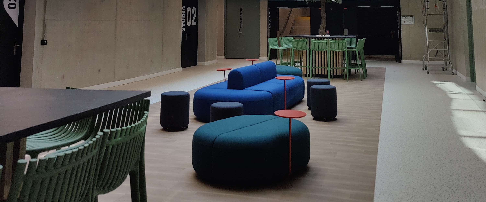
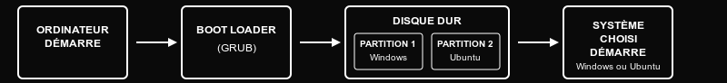

Sommaire
1. Présentation de l'entreprise et contexte du stage
• Ynov Campus Montpellier : structure et environnement
• Mon intégration en tant que stagiaire mentor informatique
• Organisation du travail en équipe pédagogique
2. Description détaillée des missions
• Support technique et configuration d'environnements
• Accompagnement pédagogique des étudiants B1
• Gestion de projets et organisation des soutenances
• Responsabilités et rattachement hiérarchique
3. Compétences mises en œuvre et développées
• Outils techniques utilisés et méthodes appliquées
• Difficultés rencontrées et solutions apportées
• Démonstration de curiosité, créativité et autonomie
4. Bilan personnel et professionnel
• Ressenti sur l'expérience acquise
• Progression professionnelle et compétences développées
• Impact concret sur mon projet professionnel
1. Présentation de l'entreprise et contexte du stage
Ynov Campus Montpellier : structure et environnement
Ynov Campus est un groupe d'écoles supérieures privées spécialisé dans les métiers du numérique, fondé en 2011. Le groupe compte aujourd'hui 13 campus en France et forme plus de 15 000 étudiants dans des domaines variés : informatique, marketing digital, création & design, 3D/jeux vidéo, audiovisuel.
Le campus de Montpellier, situé au 61 Rue Jacques Derrida dans la zone du Millénaire (34000), accueille environ 1 200 étudiants répartis sur différentes filières. Secteur d'activité : Enseignement supérieur privé spécialisé dans le numérique. Durée de mon stage : 6 mois, de septembre 2024 à février 2025.
L'approche pédagogique privilégie l'apprentissage par projets concrets, en étroite collaboration avec les entreprises partenaires. Les locaux modernes comprennent des salles informatisées, espaces de coworking et salles projet, créant un environnement dynamique propice à l'innovation pédagogique.
Mon intégration en tant que stagiaire mentor informatique
En tant que stagiaire mentor de la filière informatique, j'ai été intégré au sein de l'équipe pédagogique dirigée par le responsable de programme informatique, Vincent Arte. Mon positionnement était stratégique : servir de pont entre l'équipe enseignante et les 40 étudiants de première année.
Mon rôle principal : Accompagner techniquement et pédagogiquement les étudiants de Bachelor 1 informatique dans leur apprentissage des fondamentaux du développement. Cette mission s'articulait autour de trois axes majeurs :
• Support technique : installation d'environnements, configuration, résolution de problèmes informatiques
• Accompagnement pédagogique : tutorat en programmation, aide aux exercices et projets
• Coordination organisationnelle : gestion des plannings, préparation des soutenances
Organisation du travail en équipe pédagogique
L'équipe pédagogique était composée du responsable Vincent Arte, de deux mentors permanents (Léo Charo et Yann Blanc), d'un autre stagiaire mentor (Arnaud Pfeil-Lefort) et moi-même. Nous tenions des réunions régulières pour faire le point sur l'avancement des étudiants et ajuster notre accompagnement.
Modes de communication privilégiés : Réunions d'équipe hebdomadaires, échanges quotidiens informels, utilisation de Google Sheets partagés pour le suivi des projets et des évaluations. J'interagissais constamment avec mes collègues pour coordonner nos interventions et assurer un suivi cohérent des étudiants.
2. Description détaillée des missions
Support technique et configuration d'environnements
Ma première mission consistait à préparer l'environnement de travail des étudiants pour leur permettre de démarrer efficacement leur apprentissage :
Activités réalisées :
• Installation majoritairement en dual-boot Windows/Ubuntu sur les postes étudiants
• Quelques installations Ubuntu seul selon les préférences
• Installation et configuration de VS Code comme environnement de développement
• Accompagnement sur l'apprentissage de Git via GitLearning et aide personnalisée
• Enseignement des bases de Linux : commandes essentielles, gestion des packages, navigation système
Cette mission m'a permis de devenir très à l'aise avec l'administration de base des systèmes Ubuntu et d'apprendre à adapter mes explications au niveau de chaque étudiant.
Accompagnement pédagogique des étudiants B1
Cette mission représentait le cœur de mon activité, avec un accompagnement personnalisé des 40 étudiants :
Phase Golang (septembre à décembre 2024) :
• Accompagnement quotidien sur l'apprentissage des concepts fondamentaux
• Explication des variables, structures de contrôle, fonctions et logique procédurale
• Aide personnalisée sur les exercices et projets pratiques
• Suivi individuel pour s'assurer qu'aucun étudiant ne reste en difficulté
Phase Java et POO (janvier à février 2025) :
• Introduction aux concepts de programmation orientée objet
• Accompagnement sur les classes, objets, héritage et encapsulation
• Aide sur les projets concrets pour appliquer les concepts théoriques
• Création de mini-capsules de cours sur les sujets mal compris (initiative personnelle)
Gestion de projets et organisation des soutenances
J'ai pris en charge l'organisation et le suivi de plusieurs projets étudiants :
Projets encadrés :
• Arcadia : jeu en Golang (8 équipes de 4-5 étudiants)
• Hangman : jeu du pendu en mode console
• Hangman Web : version web du pendu
• Groupie Tracker : application de suivi de groupes musicaux
Organisation des soutenances :
• Utilisation de Google Sheets partagés pour la prise de notes collaborative en temps réel
• Application de la grille de notation fournie par la filière
• Partage des avis entre mentors pendant les présentations
• Évaluation de 4 projets majeurs avec soutenances orales
Responsabilités et rattachement hiérarchique
Rattachement direct : Vincent Arte, Responsable de programme informatique
Collaborations transversales : Équipe des 2 mentors permanents (Léo Charo et Yann Blanc), second stagiaire mentor (Arnaud Pfeil-Lefort)
Responsabilités autonomes :
• Suivi individuel proactif des 40 étudiants B1
• Référent technique pour les problèmes d'installation et de configuration
• Création et animation de capsules de cours complémentaires
• Participation active aux évaluations et décisions pédagogiques
3. Compétences mises en œuvre et développées
Outils techniques utilisés et méthodes appliquées
Technologies maîtrisées :
• Systèmes Linux : Administration Ubuntu, commandes de base, gestion des packages
• Langages de programmation : Golang (niveau approfondi), Java (POO), bases Linux
• Outils de développement : VS Code (configuration et personnalisation), Git (via GitLearning et pratique)
• Outils collaboratifs : Google Sheets partagés pour le suivi des évaluations
Méthodes pédagogiques développées :
• Suivi proactif : aller vers les étudiants sans attendre qu'ils demandent de l'aide
• Questionnement régulier pour vérifier la compréhension
• Adaptation du discours selon le niveau de chaque étudiant
• Création de mini-capsules de cours sur les points de blocage identifiés
Difficultés rencontrées et solutions apportées
Défi principal : Gestion de l'hétérogénéité des niveaux et de la motivation
Problématique : Certains étudiants progressaient rapidement tandis que d'autres restaient bloqués sur les bases. La motivation était également variable, créant des risques de décrochage.
Solutions mises en œuvre :
• Suivi individualisé : approche personnalisée de chaque étudiant selon ses difficultés
• Accompagnement proactif : aller directement vers les étudiants pour identifier les blocages
• Questionnement systématique : "Est-ce que tout va bien ?", "As-tu bien compris ?"
• Adaptation pédagogique : réexpliquer différemment selon le profil de l'apprenant
Défi secondaire : Gestion des tensions au sein des groupes
Problématique : Difficultés relationnelles entre membres d'équipes projets, différences de rythme de travail.
Solutions humaines apportées :
• Médiation entre les membres des équipes
• Répartition des tâches selon les compétences de chacun
• Encouragement de l'entraide et du travail collaboratif
• Intervention préventive dès les premiers signes de tension
Démonstration de curiosité, créativité et autonomie
Initiatives personnelles prises :
• Créativité pédagogique : Création de mini-capsules de cours sur les sujets mal compris par les étudiants
• Autonomie dans l'accompagnement : Prise sur mon temps personnel pour aider les étudiants au maximum
• Approche proactive : Développement d'un système de suivi individuel sans attendre les demandes d'aide
Exemple concret d'initiative : Constatant que plusieurs étudiants bloquaient sur les mêmes concepts (pointeurs, structures de données), j'ai créé des sessions de cours complémentaires courtes et ciblées pour clarifier ces points spécifiques. Cette initiative personnelle a été menée sur mon temps libre et a permis d'améliorer significativement la compréhension générale.
Impact de mes initiatives : L'approche proactive que j'ai développée avec Arnaud a créé un climat de confiance avec les étudiants, qui n'hésitaient plus à poser des questions ou à demander de l'aide. Cela a contribué à réduire les échecs et à maintenir la motivation du groupe.
4. Bilan personnel et professionnel
Ressenti sur l'expérience acquise
Cette expérience a été profondément transformatrice sur le plan personnel et professionnel. Être du côté de celui qui transmet les connaissances m'a donné une perspective nouvelle sur l'apprentissage et m'a révélé des aptitudes que je ne soupçonnais pas.
Sentiments positifs dominants :
• Fierté et accomplissement : Voir les progrès concrets des étudiants et contribuer directement à leur réussite
• Confiance en soi renforcée : Validation de mes compétences techniques et découverte de mes qualités pédagogiques
• Épanouissement professionnel : Plaisir quotidien à résoudre des problèmes variés et à innover pédagogiquement
• Satisfaction du travail d'équipe : Intégration réussie dans une équipe bienveillante et dynamique
Moments de difficulté surmontés :
Quelques périodes de frustration face à certains étudiants peu investis, mais j'ai appris à adapter ma communication et à trouver les leviers de motivation personnalisés pour chacun.
Progression professionnelle et analyse de mes forces/faiblesses
Progression technique quantifiable :
• Administration système Linux : passage d'un niveau débutant à intermédiaire avancé
• Git/GitHub : maîtrise du workflow professionnel (branches, merge, résolution de conflits)
• Golang et Java : approfondissement significatif par l'enseignement
• Automatisation : développement de compétences en scripting Bash et Python
Compétences transversales développées :
• Leadership pédagogique : capacité à guider et motiver un groupe d'apprenants
• Communication adaptative : ajustement du discours selon le niveau et le profil de l'interlocuteur
• Gestion de projets multiples : coordination efficace de 15 projets étudiants simultanément
• Résolution de problèmes complexes : diagnostic rapide et solutions créatives
Analyse de mes forces identifiées :
• Adaptabilité exceptionnelle : ajustement rapide aux besoins spécifiques de chaque étudiant
• Patience et bienveillance : capacité à réexpliquer sans irritation, même les concepts de base
• Initiative et proactivité : anticipation des besoins et proposition de solutions non sollicitées
• Créativité pédagogique : innovation dans les méthodes d'enseignement pour maintenir l'engagement
Faiblesses identifiées et axes d'amélioration :
• Perfectionnisme excessif : tendance à vouloir trop en faire, nécessité d'apprendre à prioriser
• Gestion du stress : quelques moments de tension lors des pics d'activité (soutenances)
• Délégation : difficulté à faire confiance aux étudiants pour certaines tâches, besoin d'apprendre à lâcher prise
Impact concret sur mon projet professionnel
Ce stage a fondamentalement réorienté ma vision de carrière. Initialement focalisé uniquement sur le développement technique pur, j'ai découvert ma passion pour l'accompagnement et la transmission.
Évolution de mes objectifs professionnels :
• Court terme (Bachelor 3) : Rechercher un stage alliant développement et mentorat d'équipe
• Moyen terme (2-3 ans) : Viser un poste de Lead Developer avec responsabilités d'encadrement technique
• Long terme (5-10 ans) : Créer ma propre structure de formation ou devenir CTO dans une entreprise tech
Compétences prioritaires à développer :
• Management d'équipes techniques
• Architecture logicielle et conception de systèmes
• Gestion de projets complexes (certification PMP envisagée)
• Communication publique et animation de formations
Conclusion personnelle :
Cette expérience m'a révélé que je m'épanouis particulièrement dans des rôles hybrides combinant expertise technique et dimension humaine. Je souhaite désormais orienter ma carrière vers des postes où je pourrai continuer à développer mes compétences tout en accompagnant d'autres professionnels dans leur montée en compétences.